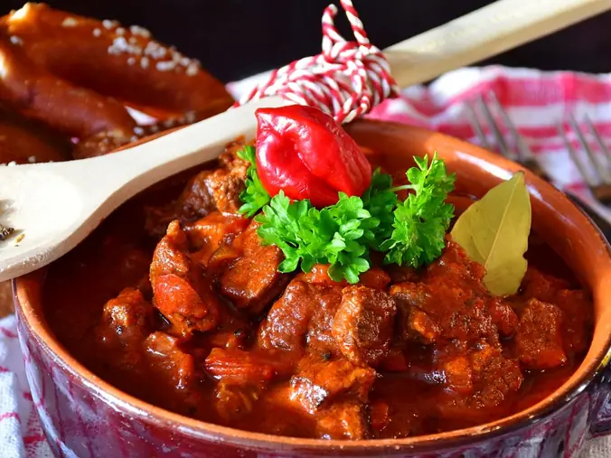

Фото: RitaE, CC0

Гуляш из говядины
Мягкая говядина в густой подливе с паприкой, к пюре, гречке или макаронам
110 мин5 порц.386 ккал на порциюБ 28 · Ж 26 · У 11Европейская кухня
Продукты на 5 порц.
- Говядина700 г
- Лук репчатый2 шт
- Морковь1 шт
- Перец болгарский по желанию1 шт
- Томатная паста1,5 ст. л.
- Мука пшеничная1 ст. л.
- Паприка2 ч. л.
- Чеснок2 зуб.
- Вода3 стак.
- Растительное масло3 ст. л.
- Соль2 ч. л.
- Перец чёрный молотый2 щеп.
- Лавровый лист2 шт
Как готовить
- Говядину нарежьте кубиками 2-3 см и обсушите полотенцем. Лук нарежьте кубиком, морковь натрите, перец нарежьте полосками.
- Разогрейте масло в толстостенной кастрюле на сильном огне. Обжарьте мясо в 2 приёма по 5 минут до коричневой корочки.
- Верните всё мясо, добавьте лук и морковь, жарьте 5 минут на среднем огне.
- Посыпьте мукой и паприкой, перемешайте, добавьте томатную пасту и жарьте 1 минуту.
- Влейте горячую воду, положите лавровый лист, соль и перец. Доведите до кипения.
- Тушите под крышкой на слабом огне 60-80 минут. За 15 минут до конца добавьте болгарский перец и рубленый чеснок.
- Гуляш готов, когда мясо легко разламывается вилкой, а подлива загустела.
Совет. Говядину для гуляша берите из лопатки или голяшки, не вырезку. Жёсткое мясо при долгом тушении становится самым мягким.